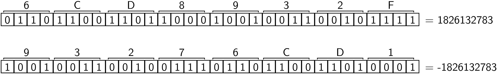

Einfache Datentypen, Variablen und Zuweisungen¶
Integers¶
Wir hatten bereits im Kapitel Eine Vorschau gesehen, dass Python mit ganzen Zahlen umgehen kann und man mit diesen auch Rechenoperationen ausführen kann. Doch wie groß dürfen die ganzen Zahlen werden? Probieren wir es einfach aus, indem wir die 200-ste Potenz von 2 nehmen.
>>> 2**200
1606938044258990275541962092341162602522202993782792835301376
Im Prinzip kann Python mit beliebig großen Zahlen umgehen. Außerdem können diese natürlich auch ein Vorzeichen besitzen.
>>> 5-7
-2
Es ist keineswegs selbstverständlich, dass eine Programmiersprache mit beliebig großen ganzen Zahlen umgehen kann. Zudem gibt es Programmiersprachen, die vorzeichenlose ganze Zahlen als Datentyp zur Verfügung stellen. Daher unterscheiden wir im Folgenden zwischen dem mathematischen Begriff »ganze Zahl« und dem Datentyp »Integer«. Dieser Unterschied kommt in Python bei der Addressierung von Listen und Zeichenketten zum Tragen, wo der Index begrenzt ist. Den zulässigen Maximalwert kann man folgendermaßen herausfinden [1]:
>>> import sys
>>> sys.maxsize
9223372036854775807
>>> 2**63-1
9223372036854775807
Dieses Ergebnis wurde auf einem System mit einem 64-Bit-Prozessor erhalten. Wie lässt sich diese Beschränkung des Wertebereichs von Integers erklären? Im Computer werden sämtliche Daten binär durch Bits dargestellt, wobei jedes Bit den Wert 0 oder 1 annehmen kann. In einem 64-Bit-Prozessor kann ein Integer, der aus maximal 64 Bit besteht, auf einmal verarbeitet werden. Ein Bit wird allerdings für das Vorzeichen benötigt, wie man an den folgenden beiden Beispielen sieht:
{kind=link}
Für positive Zahlen ist das erste Bit gleich Null, für negative Zahlen dagegen gleich Eins. Die Viererblöcke stellen jeweils Hexadezimalzahlen dar, wobei nach 0-9 mit A-F oder auch a-f weitergezählt wird, wie die folgende Tabelle zeigt.
| dezimal | binär | oktal | hexadezimal |
|---|---|---|---|
| 0 | 0000 | 00 | 0 |
| 1 | 0001 | 01 | 1 |
| 2 | 0010 | 02 | 2 |
| 3 | 0011 | 03 | 3 |
| 4 | 0100 | 04 | 4 |
| 5 | 0101 | 05 | 5 |
| 6 | 0110 | 06 | 6 |
| 7 | 0111 | 07 | 7 |
| 8 | 1000 | 10 | 8 |
| 9 | 1001 | 11 | 9 |
| 10 | 1010 | 12 | A |
| 11 | 1011 | 13 | B |
| 12 | 1100 | 14 | C |
| 13 | 1101 | 15 | D |
| 14 | 1110 | 16 | E |
| 15 | 1111 | 17 | F |
Mit den 63 Bit, die für positive Zahlen zur Verfügung stehen, lassen sich die
ganzen Zahlen von \(0\) bis \(2^{63}-1\) darstellen, womit sich obiges
Ergebnis für sys.maxsize erklärt.
 Wie lässt sich das Zustandekommen des Bitmusters im Falle negativer
Zahlen verstehen? Warum ist diese Wahl sinnvoll? (Hinweis: Betrachten Sie die
Addition einer positiven und einer negativen Zahl.) Warum ergibt sich ein
asymmetrischer Wertebereich für Integers?
Wie lässt sich das Zustandekommen des Bitmusters im Falle negativer
Zahlen verstehen? Warum ist diese Wahl sinnvoll? (Hinweis: Betrachten Sie die
Addition einer positiven und einer negativen Zahl.) Warum ergibt sich ein
asymmetrischer Wertebereich für Integers?
In Python kann man auch mit Binär-, Oktal- und Hexadezimalzahlen arbeiten, die durch
die Präfixe 0b oder 0B, 0o oder 0O bzw. 0x oder 0X
gekennzeichnet werden.
>>> 0x6cd8932f
1826132783
>>> 0b11001
25
>>> 0o31
25
Die Umwandlung in das Binär-, Oktal- oder Hexadezimalformat erfolgt mit Hilfe der
Funktionen bin, oct bzw. hex:
>>> bin(25)
'0b11001'
>>> oct(25)
'0o31'
>>> hex(25)
'0x19'
Bei der Division von zwei Integers muss man je nach Programmiersprache aufpassen, da die Division möglicherweise einen Rest ergibt. Das Ergebnis könnte daher entweder eine Gleitkommazahl sein oder aber ein Integer, wobei der entstandene Rest ignoriert wird.
In Python 3 ergibt die Division mit einem einfachen Schrägstrich immer eine Gleitkommazahl, selbst wenn bei der Division kein Rest entsteht [2].
>>> 1/2
0.5
>>> 15/3
5.0
Dies dürfte in den meisten Fällen das erwünschte Verhalten sein. Es kann aber durchaus sein, dass man tatsächlich eine Integerdivision benötigt. Diese lässt sich mit einem doppelten Schrägstrich erhalten.
>>> 1//2
0
>>> 15//7
2
>>> -15//7
-3
Was macht der //-Divisionsoperator tatsächlich, vor allem vor dem
Hintergrund des letzten Beispiels? [3]
In anderen Sprachen und auch in Python 2, in denen der einfache Schrägstrich eine Integerdivision bedeutet, kann man eine Gleitkommadivision erzwingen, indem man dafür sorgt, dass das erste Argument nicht ein Integer, sondern eine Gleitkommazahl ist. Wie dies geht, wird im Kapitel Gleitkommazahlen erklärt.
Ein wichtiger Punkt, der nicht nur für Integers von Bedeutung ist, ist die Reihenfolge, in der Operationen ausgeführt werden. Dies sei an einem Beispiel illustriert:
>>> 2+3*4
14
>>> (2+3)*4
20
Die Multiplikation hat also offenbar Vorrang vor der Addition. In der folgenden, für Python gültigen Tabelle haben die höher stehenden Operatoren Vorrang vor den tiefer stehenden [4]:
| Operatoren | Beschreibung |
|---|---|
** |
Exponentiation |
+x, -x |
Positives und negatives Vorzeichen |
*, / |
Multiplikation, Division |
+, - |
Addition, Subtraktion |
Wird ** direkt von einem Plus oder Minus gefolgt, bindet letzteres stärker:
>>> 2**-0.5
0.7071067811865476
Stehen Operatoren auf der gleichen Stufe, so wird der Ausdruck von links nach rechts ausgewertet. Gegebenenfalls müssen Klammern verwendet werden, um die gewünschte Reihenfolge sicherzustellen. Es spricht auch nichts dagegen, im Zweifelsfall oder zur besseren Lesbarkeit Klammern zu setzen, selbst wenn diese nicht zur korrekten Abarbeitung des Ausdrucks erforderlich sind.
Was ergibt -2*4+3**2? Was ergibt 6**4/2?
Gleitkommazahlen¶
Wichtiger als Integers sind in der numerischen Physik die Floats, also
Gleitkommazahlen. Man kann sie unter anderem durch Umwandlung mit Hilfe
der Funktion float() erhalten. [5]
>>> type(2)
<class 'int'>
>>> float(2)
2.0
>>> type(float(2))
<class 'float'>
Eine Umwandlung von Floats in Integers ist mit der Funktion int()
möglich, wobei der Nachkommaanteil abgeschnitten wird:
>>> int(2.5)
2
Bereits das Anhängen eines Punktes genügt, damit Python die Zahl als Float interpretiert:
>>> type(2.)
<class 'float'>
Im Gegensatz zu vielen anderen Programmiersprachen ist es nicht notwendig, den Typ explizit festzulegen. Man spricht in diesem Zusammenhang auch von duck typing: »If it looks like a duck and quacks like a duck, it must be a duck.« [6]
Für Floats gibt es zwei mögliche Schreibweisen. Dies ist zum einen die Dezimalbruchschreibweise unter Verwendung eines Dezimalpunkts. Stehen vor oder nach dem Dezimalpunkt keine Ziffern, so wird der entsprechende Anteil gleich Null gesetzt.
>>> 5.
5.0
>>> 0.25
0.25
>>> .25
0.25
>>> .
File "<stdin>", line 1
.
^
SyntaxError: invalid syntax
Wie das letzte Beispiel zeigt, muss aber mindestens vor oder nach dem Dezimalpunkt eine Ziffer stehen. Andernfalls zeigt Python einen Syntaxfehler an.
Für sehr kleine oder sehr große Zahlen ist statt der Dezimalbruchschreibweise
die Exponentialschreibweise besser geeignet. Die Zahl wird dabei mit Hilfe
einer Mantisse, die nicht zwingend einen Dezimalpunkt enthalten muss, und einem
ganzzahligen Exponenten, der ein Vorzeichen enthalten darf, dargestellt.
Zwischen Mantisse und Exponenten muss dabei ein e oder ein E stehen.
>>> 1e-2
0.01
>>> 1.53e2
153.0
>>> 1E-5
1e-05
Da Dezimalzahlen im Allgemeinen keine endliche Binärdarstellung besitzen, kommt es bei der Umwandlung in die Binärdarstellung zu Rundungsfehlern, die gegebenenfalls bei der Beurteilung der Genauigkeit einer Rechnung zu beachten sind. [7] Das Auftreten von Rundungsfehlern wird an folgendem Beispiel deutlich.
>>> 0.1+0.1+0.1-0.3
5.551115123125783e-17
Zeigen Sie, dass die Dezimalzahl 0.1 die Binärdarstellung
\(0.0\overline{0011}\) besitzt.
Informationen über die Eigenschaften von Floats auf dem verwendeten System kann man folgendermaßen erhalten:
>>> import sys
>>> sys.float_info
sys.float_info(max=1.7976931348623157e+308, max_exp=1024, max_10_exp=308,
min=2.2250738585072014e-308, min_exp=-1021, min_10_exp=-307, dig=15,
mant_dig=53, epsilon=2.220446049250313e-16, radix=2, rounds=1)
sys.float_info.max ist der maximale Wert, den ein Float darstellen kann,
während sys.float_info.min die kleinste normalisierte Zahl größer als
Null ist, die ein Float darstellen kann. Obwohl man noch kleinere Zahlen darstellen
kann, besteht um die Null herum eine Lücke. sys.float_info.epsilon ist die
Differenz zwischen der kleinsten Zahl größer als Eins, die mit dem
gegebenen Float-Typ darstellbar ist, und Eins selbst.
Können Sie die Werte für max, min und epsilon erklären?
Hinweis: Es handelt sich hier um ein Double im Sinne des IEEE754-Standards [8]
mit einem 11-Bit-Exponenten, einem Vorzeichenbit und einer Mantisse von 52 Bit.
Welches ist die kleinste streng positive Zahl, die Sie mit einem Float darstellen
können?
Im Gegensatz zu Integers können Gleitkommazahlen also nicht beliebig groß werden, sondern sind auf einen allerdings recht großzügig bemessenen Bereich bis etwas über \(10^{308}\) beschränkt. Werden Gleitkommazahlen zu groß, so erhält man ein vorzeichenbehaftetes Unendlich:
>>> 1e400
inf
>>> -1e400
-inf
>>> 1e400 - 1e401
nan
Lässt sich mit unendlichen Größen nicht sinnvoll rechnen, wird nan ausgegeben, das
für »not a number« steht. Eine Division durch Null führt nicht etwa zu inf, sondern
zu einem Fehler:
>>> 1.5/0
Traceback (most recent call last):
File "<stdin>", line 1, in <module>
ZeroDivisionError: float division
Hierbei wird eine Ausnahme (Exception) ausgelöst, die man geeignet behandeln kann, wie wir im Abschnitt Abfangen von Ausnahmen noch sehen werden.
Funktionen für reelle Zahlen¶
In physikalischen Anwendungen wird man häufig mathematische Funktionen auswerten wollen. Der Versuch, z.B. eine Exponentialfunktion auszuwerten, führt zunächst nicht zum Erfolg:
>>> exp(2)
Traceback (most recent call last):
File "<stdin>", line 1, in <module>
NameError: name 'exp' is not defined
Es muss vielmehr zunächst das Modul math geladen werden:
>>> import math
>>> math.exp(2)
7.38905609893065
Dieser Schritt ist auch in vielen anderen Sprachen erforderlich. Eine wichtige Ausnahme stellt die Programmiersprache Fortran dar, deren Name ursprünglich als Abkürzung für Formula Translation stand und deren Hauptzweck in der Lösung numerischer Probleme besteht. Dort werden mathematische Funktionen als Bestandteile der Sprache direkt zur Verfügung gestellt.
Zum Vergleich mit Python betrachten wir den folgenden Code, der die Verwendung einer mathematischen Funktion in der Programmiersprache C illustriert:
#include <stdio.h>
#include <math.h>
int main(void) {
double x = 2;
printf("Die Wurzel von %f ist %f\n", x, sqrt(x));
}
Speichert man diesen C-Code in einer Datei und verwendet hierfür beispielsweise
den Dateinamen bsp_math.c, so lässt sich mit Hilfe des
Kommandozeilenbefehls cc -o bsp_math bsp_math.c -lm die lauffähige Datei
bsp_math erzeugen. Hierbei wird das Programm kompiliert und entsprechend
der Option -lm mit der Mathematikbibliothek gelinkt. Das Resultat ist eine
Datei in Maschinencode, die vom Rechner ausgeführt werden kann.
Dieses Codebeispiel zeigt einige Unterschiede zwischen den Programmiersprachen Python und C. Während Python das Programm direkt interpretiert, ist in C ein Kompilationsschritt und das Hinzuladen von Bibliotheken erforderlich. Zum anderen zeigt der C-Code, dass der Datentyp von Variablen deklariert werden muss. In diesem Beispiel wird x als doppelt genaue Gleitkommazahl definiert. Der Vorteil besteht darin, dass der resultierende Maschinencode im Allgemeinen deutlich schneller ausgeführt werden kann.
Doch kommen wir zurück zu Python. Nach dem Import des math-Moduls kann
man Informationen über die zur Verfügung stehenden Funktionen durch Eingabe von
help(math) im Python-Interpreter erhalten. Von der Ausgabe ist im Folgenden
nur ein kleiner Ausschnitt gezeigt:
>>> import math
>>> help(math)
Help on module math:
NAME
math
MODULE REFERENCE
http://docs.python.org/3.5/library/math
The following documentation is automatically generated from the Python
source files. It may be incomplete, incorrect or include features that
are considered implementation detail and may vary between Python
implementations. When in doubt, consult the module reference at the
location listed above.
DESCRIPTION
This module is always available. It provides access to the
mathematical functions defined by the C standard.
FUNCTIONS
acos(...)
acos(x)
Return the arc cosine (measured in radians) of x.
acosh(...)
acosh(x)
Return the inverse hyperbolic cosine of x.
Häufig ist es zu umständlich, den Modulnamen beim Funktionsaufruf immer explizit anzugeben. Stattdessen kann man einzelne Funktionen des Moduls einbinden:
>>> from math import sin, cos
>>> sin(0.5)**2+cos(0.5)**2
1.0
Alternativ kann man sämtliche Objekte eines Moduls auf einmal einbinden:
>>> from math import *
>>> log(10)
2.302585092994046
Dieses Vorgehen ist allerdings nicht ganz unproblematisch, da man auf diese Weise einen unter Umständen großen Namensraum einbindet und damit potentiell unabsichtlich Funktionen definiert oder umdefiniert wodurch die Funktionsweise des Programms fehlerhaft sein kann.
Die nachfolgende Tabelle gibt die Funktionen des Moduls math an.
| Name | Funktion |
|---|---|
ceil(x) |
kleinste ganze Zahl größer oder gleich x |
copysign(x, y) |
ergibt x mit dem Vorzeichen von y |
fabs(x) |
Absolutwert von x |
factorial(x) |
Fakultät, nur für positive ganze Argumente |
floor(x) |
größte ganze Zahl kleiner oder gleich x |
fmod(x, y) |
Modulofunktion für Gleitkommazahlen |
frexp(x) |
ergibt Mantisse m und Exponent e für Basis 2 |
fsum(z) |
Summe über z, z ist iterierbarer Datentyp |
gcd(a, b) |
größter gemeinsamer Teiler der ganzen Zahlen a und b (ab Python 3.5) |
isclose(a, b) |
überprüft ob a und b nahezu gleich sind (ab Python 3.5) [9] |
isfinite(x) |
überprüft ob x weder unendlich noch nan (not a number) ist (ab Python 3.2) |
isinf(x) |
überprüft ob x unendlich ist |
isnan(x) |
überprüft ob x nan (not a number) ist |
ldexp(x, i) |
inverse Funktion zu frexp, gibt x*(2**i) zurück |
modf(x) |
gibt Vor- und Nachkommaanteil als Gleitkommazahl zurück |
trunc(x) |
schneidet Nachkommaanteil ab |
exp(x) |
Exponentialfunktion |
expm1(x) |
Exponentialfunktion minus 1 (ab Python 3.2) |
log(x[, base]) |
Logarithmus, ohne Angabe der Basis: natürlicher Logarithmus |
log1p(x) |
natürlicher Logarithmus von x+1 |
log2(x) |
binärer Logarithmus (ab Python 3.3) |
log10(x) |
dekadischer Logarithmus |
pow(x, y) |
\(x^y\) |
sqrt(x) |
Quadratwurzel |
acos(x) |
Arkuskosinus (im Bogenmaß) |
asin(x) |
Arkussinus (im Bogenmaß) |
atan(x) |
Arkustangens (im Bogenmaß) |
atan2(y, x) |
Arkustangens von y/x (im Bogenmaß) |
cos(x) |
Kosinus (x im Bogenmaß) |
hypot(x, y) |
Wurzel aus der Summe der Quadrate von x und y |
sin(x) |
Sinus (x im Bogenmaß) |
tan(x) |
Tangens (x im Bogenmaß) |
degrees(x) |
Umwandlung von Bogenmaß nach Grad |
radians(x) |
Umwandlung von Grad nach Bogenmaß |
acosh(x) |
Areakosinus Hyperbolicus |
asinh(x) |
Areasinus Hyperbolicus |
atanh(x) |
Areatangens Hyperbolicus |
cosh(x) |
Kosinus Hyperbolicus |
sinh(x) |
Sinus Hyperbolicus |
tanh(x) |
Tangens Hyperbolicus |
erf(x) |
Fehlerfunktion [10] |
erfc(x) |
Komplement der Fehlerfunktion [10] |
gamma(x) |
Gammafunktion [11] |
lgamma(x) |
natürlicher Logarithmus des Betrags der Gammafunktion [11] |
Außerdem werden die Kreiszahl π=3.14159… und die eulersche Zahl e=2.71828… definiert:
>>> from math import sin, pi, degrees
>>> sin(0.5*pi)
1.0
>>> degrees(pi)
180.0
>>> from math import log, e
>>> log(e)
1.0
Falls e bereits als Bezeichner für andere Zwecke benötigt wird, können Sie auch einen
anderen Namen vergeben:
>>> from math import e as euler_zahl
>>> euler_zahl
2.718281828459045
Ab Python 3 sind schließlich noch math.inf für positiv Unendlich und
math.nan für »not a number« definiert.
Komplexe Zahlen¶
Neben reellen Zahlen benötigt man immer wieder auch komplexe Zahlen. Dabei
erzeugt man einen Imaginärteil durch Anhängen des Zeichens j oder J, das
Ingenieure häufig statt des in der Physik üblichen i verwenden.
Alternativ kann man die Funktion complex() verwenden:
>>> (1+0.5j)/(1-0.5j)
(0.6+0.8j)
>>> complex(1, 0.5)
(1+0.5j)
Möchte man aus den Werten zweier Variablen eine komplexe Zahl konstruieren, geht dies mit der zweiten der gerade genannten Methoden sehr einfach
>>> x = 1
>>> y = 2
>>> z = complex(x, y)
>>> z
(1+2j)
Falls man die Funktion complex() nicht verwenden möchte, muss man
beachten, dass die folgenden beiden Wege nicht zum Ziel führen:
>>> z = x+yj
Traceback (most recent call last):
File "<stdin>", line 1, in <module>
NameError: name 'yj' is not defined
>>> z = x+y*j
Traceback (most recent call last):
File "<stdin>", line 1, in <module>
NameError: name 'j' is not defined
In diesem Fall geht Python davon aus, dass es sich bei yj bzw. j
um eine Variable handelt, die jedoch bis jetzt noch nicht definiert wurde.
Vielmehr muss die imaginäre Einheit explizit als 1j geschrieben
werden:
>>> z = x+y*1j
>>> z
(1+2j)
Zeigen Sie, dass das Ergebnis einer Rechnung, die komplexe Zahlen
enthält, selbst dann als komplexe Zahl dargestellt wird, wenn das Ergebnis
reell ist.
Hat man eine komplexe Zahl einer Variablen zugewiesen (dies wird im Kapitel Variablen und Zuweisungen genauer diskutiert), so lassen sich Real- und Imaginärteil wie folgt bestimmen:
>>> x = 1+0.5j
>>> x.real
1.0
>>> x.imag
0.5
>>> x.conjugate()
(1-0.5j)
Die Unterschiede in den Aufrufen ergeben sich daraus, dass in den ersten beiden Fällen auf Attribute der komplexen Zahl zugegriffen wird, während im letzten Fall eine Methode aufgerufen wird. Diese Zusammenhänge werden im Kapitel Objektorientiertes Programmieren klarer werden.
Natürlich wollen wir auch für komplexe Zahlen mathematische Funktionen
auswerten. Das Modul math hilft hier aber nicht weiter:
>>> from math import exp, pi
>>> exp(0.25j*pi)
Traceback (most recent call last):
File "<stdin>", line 1, in <module>
TypeError: can't convert complex to float; use abs(z)
Als Argument wird hier nur eine reelle Zahl akzeptiert. Stattdessen muss man
das Modul cmath laden:
>>> from cmath import exp, pi
>>> exp(0.25j*pi)
(0.7071067811865476+0.7071067811865475j)
Dabei ist das Ergebnis immer eine komplexe Zahl. Daher kann es wünschenswert
sein, sowohl das Modul math als auch das Modul cmath zu
importieren:
>>> import math, cmath
>>> math.exp(2)
7.38905609893065
>>> cmath.exp(0.25j*math.pi)
(0.7071067811865476+0.7071067811865475j)
Eine andere Möglichkeit wäre
>>> from math import exp, pi
>>> from cmath import exp as cexp
>>> exp(2)
7.38905609893065
>>> cexp(0.25j*pi)
(0.7071067811865476+0.7071067811865475j)
Welche Funktion wird verwendet, wenn man nacheinander die Funktion
exp() aus dem Modul math und aus dem Modul cmath importiert?
Variablen und Zuweisungen¶
In einem Beispiel des letzten Abschnitts haben wir bereits eine Zahl einer Variablen zugewiesen. Da dies in einem Programm der Normalfall ist, müssen wir wissen, welche Namen für Variablen zugelassen sind. Ein Variablenname oder allgemein ein Bezeichner besteht aus einer beliebigen Zahl von Zeichen, wobei Buchstaben, der Unterstrich (_) und Ziffern zugelassen sind. Das erste Zeichen darf jedoch keine Ziffer sein. Der Unterstrich zu Beginn und am Ende eines Bezeichners impliziert üblicherweise eine spezielle Bedeutung, auf die wir später noch zurückkommen werden. Daher sollte man es sich zur Regel machen, den Unterstrich höchstens innerhalb eines Bezeichners zu verwenden, sofern man nicht bewusst den Unterstrich in anderer Weise einsetzt.
Viel interessanter als Unterstriche sind Buchstaben. Diese umfassen zunächst
einmal die Großbuchstaben A-Z und Kleinbuchstaben a-z. Wie sieht es
aber mit Umlauten oder gar mit Buchstaben aus anderen Schriftsystemen,
beispielsweise griechischen Buchstaben aus? In diesem Zusammenhang stellt sich
die Frage, wie Zeichen im Rechner überhaupt in einer binären Form dargestellt
werden. Es gibt hierfür zahlreiche Standards, unter anderem den ASCII-Standard,
der noch nicht einmal Umlaute kennt, den ISO-8859-1-Standard, der diesen
Mangel behebt, aber dennoch im Umfang sehr beschränkt ist, bis hin zum
Unicode-Standard, der mehr als hunderttausend Zeichen umfasst. Für den
Unicode-Standard gibt es wiederum verschiedene Codierungen, inbesondere die in
der westlichen Welt sinnvolle UTF-8-Kodierung. Etwas mehr Details zu diesem
Thema sind im Anhang Unicode zu finden.
Aus dem vorigen Abschnitt ergibt sich vielleicht der Eindruck, dass die Kodierung von Zeichen ein komplexeres Thema ist, und dieser Eindruck trügt nicht. Die gute Nachricht ist allerdings, dass zum einen immer mehr Computerbetriebssysteme die UTF-8-Kodierung verwenden und für Python-3-Skripte standardmäßig die UTF-8-Kodierung angenommen wird. In Python 3 muss man sich, im Gegensatz zu Python 2, über die Codierung in vielen Fällen keine großen Gedanken mehr machen, sofern man nicht zum Beispiel eine Ausgabe in einer anderen Codierung haben möchte.
Die Verwendung der UTF-8-Kodierung impliziert, dass Buchstaben in Bezeichnern
alle Zeichen sein können, die im Unicode-Standard als Buchstaben angesehen
werden, also neben Umlauten zum Beispiel auch griechische Zeichen. Ob es
wirklich sinnvoll ist, Buchstaben von außerhalb des Bereichs A-Z und
a-z zu verwenden, sollte man sich im Einzelfall gut überlegen. Man muss
sich nur vor Augen halten, was es für Folgen hätte, wenn man ein Programm
analysieren müsste, das unter Verwendung von chinesischen Schriftzeichen
geschrieben wurde. Dennoch ist zum Beispiel der folgende Code für Python 3 kein
Problem:
>>> from math import pi as π
>>> Radius = 2
>>> Fläche = π*Radius**2
>>> print(Fläche)
12.5663706144
Es ist nicht selbstverständlich, dass solche Variablennamen in anderen Programmiersprachen ebenfalls zugelassen sind.
Bei einer Programmiersprache ist immer die Frage zu klären, ob zwischen Groß-
und Kleinschreibung unterschieden wird. Python tut dies, so dass var,
Var und VAR verschiedene Variablen bezeichnen und für Python nichts
miteinander zu tun haben. Auch hier stellt sich im Einzelfall die Frage,
ob es sinnvoll ist, in einem Programm Variablennamen gleichzeitig in Groß-
und Kleinschreibung zu verwenden. Es ist jedoch wichtig zu wissen, dass eine
Fehlfunktion des Programms ihren Ursprung in einem Tippfehler haben kann,
bei dem Groß- und Kleinschreibung nicht beachtet wurden.
Es ist für die Verständlichkeit des Programmcodes angebracht, möglichst
aussagekräftige Bezeichner zu verwenden, auch wenn diese im Allgemeinen etwas
länger ausfallen. Dabei ist es häufig sinnvoll, einen Bezeichner aus mehreren
Wörtern zusammenzusetzen. Um die einzelnen Bestandteile erkennen zu können,
sind verschiedene Varianten üblich. Man kann zur Trennung einen Unterstrich
verwenden, z.B. sortiere_liste. Alternativ kann man neue Worte mit einem
Großbuchstaben beginnen, wobei der erste Buchstabe des Bezeichners groß oder
klein geschrieben werden kann, z.B. sortiereListe oder SortiereListe.
Im ersten Fall spricht man von mixedCase, im zweiten Fall von CamelCase, da
die Großbuchstaben an Höcker eines Kamels erinnern. Details zu den in Python
empfohlenen Konventionen für Bezeichner finden Sie im Python Enhancement Proposal PEP 8
mit dem Titel »Style Guide for Python Code« im Abschnitt Naming Conventions.
Die folgenden Schlüsselwörter sind in Python als Sprachelemente reserviert und dürfen nicht für Bezeichner verwendet werden [12]:
False assert del for in or while
None break elif from is pass with
True class else global lambda raise yield
and continue except if nonlocal return
as def finally import not try
 Da griechische Buchstaben in der Physik relativ häufig sind, ist
insbesondere darauf zu achten, dass
Da griechische Buchstaben in der Physik relativ häufig sind, ist
insbesondere darauf zu achten, dass lambda reserviert ist. Den Grund hierfür
werden wir im Kapitel Lambda-Funktionen diskutieren.
Variablen kann nun ein Wert zugeordnet werden, wie folgende Beispiele zeigen:
>>> x = 1
>>> x = x + 1
>>> print(x)
2
Aus der zweiten Zeile wird klar, dass es sich hier trotz des
Gleichheitszeichens nicht um eine Gleichung handelt. Vielmehr wird die rechte
Seite ausgewertet und der auf der linken Seite stehenden Variablen zugewiesen.
Die zweite Zeile müsste also eigentlich als x → x+1 gelesen werden.
1 2 3 4 5 6 7 8 9 | >>> x = y = 1
>>> x, y
(1, 1)
>>> x, y = 2, 3
>>> x, y
(2, 3)
>>> x, y = y, x
>>> x, y
(3, 2)
|
In Python ist es möglich, mehreren Variablen gleichzeitig einen Wert zuzuordnen (Zeile 1) oder mehreren Variablen in einer Anweisung verschiedene Werte zuzuordnen (Zeile 4). Statt des Tupels auf der rechten Seite von Zeile 4 könnte auch eine Liste mit zwei Elementen stehen. Tupel und Liste sind Datentypen, die mehrere Elemente enthalten und die wir im Kapitel Zusammengesetzte Datentypen noch genauer ansehen werden. Zeile 7 zeigt, wie man elegant die Werte zweier Variablen vertauschen kann. Dieses Verfahren ist so nicht in jeder Programmiersprache möglich. Dann muss man darauf achten, nicht einen der beiden Werte zu verlieren:
1 2 3 4 5 6 7 8 9 10 11 | >>> x, y = 1, 2
>>> x = y
>>> y = x
>>> x, y
(2, 2)
>>> x, y = 1, 2
>>> tmp = x
>>> x = y
>>> y = tmp
>>> x, y
(2, 1)
|
In Zeile 2 wird der Wert von x überschrieben und geht somit verloren. In
Zeile 7 wird dieser Wert dagegen in der Variablen tmp zwischengespeichert und
kann somit in Zeile 9 der Variablen y zugewiesen werden.
In den Codebeispielen haben wir vor und nach dem Gleichheitszeichen ein
Leerzeichen gesetzt. Dies ist nicht zwingend notwendig, verbessert aber die
Lesbarkeit des Codes und wird daher auch im bereits weiter oben erwähnten Python
Enhancement Proposal PEP 8 empfohlen. Eine weitere Empfehlung lautet, eine
Zeilenlänge von 79 Zeichen nicht zu überschreiten. Bei überlangen Zeilen kann
man mit einem Backslash (\) am Zeilenende eine Fortsetzungszeile erzeugen.
In gewissen Fällen erkennt der Python-Interpreter, dass eine Fortsetzungszeile
folgen muss, so dass dann der Backslash entfallen kann. Dies ist insbesondere
der Fall, wenn in einer Zeile eine Klammer geöffnet wird, die dann erst in
einer Folgezeile wieder geschlossen wird. Es wird häufig empfohlen, den Backslash
zur Kennzeichnung einer Fortsetzungszeile zu vermeiden. Stattdessen sollte
eine Klammerung verwendet werden, selbst wenn diese ausschließlich zur impliziten
Markierung von Fortsetzungszeilen dient. Im folgenden Beispiel wird deutlich,
wie man die Klammerung einsetzen kann, auch wenn man die Addition kaum über zwei
Zeilen verteilen wird:
>>> 4+
File "<stdin>", line 1
4+
^
SyntaxError: invalid syntax
>>> (4+
... 5)
9
Beim ersten Versuch kann Python nicht erkennen, dass eine Fortsetzungszeile folgen soll, und beschwert sich entsprechend über die unvollständige Addition. Im zweiten Versuch behebt die Klammerung das Problem.
Wahrheitswerte¶
Im Kapitel Eine Vorschau hatten wir schon gesehen, dass man den Ablauf eines Programms in Abhängigkeit davon beeinflussen kann, dass eine bestimmte Bedingung erfüllt ist oder nicht. In diesem Zusammenhang spielen Wahrheitswerte oder so genannte boolesche Variable eine Rolle.
Mit einem Wahrheitswert kann die Gültigkeit einer Aussage mit »wahr« oder
»falsch« spezifiziert werden. Mögliche Werte in Python sind entsprechend
True und False, wobei die Großschreibung des ersten Zeichens wichtig
ist. Für die bis jetzt behandelten Datentypen (Integer, Float, Complex) gilt,
dass eine Null dem Wert False entspricht, während alle anderen Zahlenwerte
einem True entsprechen. Dies lässt sich durch eine explizite Umwandlung mit
Hilfe der Funktion bool() überprüfen:
>>> bool(0)
False
>>> bool(42)
True
Wichtige logische Operatoren sind not (Negation), and (logisches Und)
und or (logisches Oder):
>>> x = True
>>> y = False
>>> not x
False
>>> x and y
False
>>> x or y
True
Logische Ausdrücke werden in Python von links nach rechts ausgewertet und zwar nur so weit, wie es für die Entscheidung über den Wahrheitswert erforderlich ist. Dies wird in dem folgenden Beispiel illustriert:
>>> x = True
>>> y = 0
>>> x or 1/y
True
>>> x and 1/y
Traceback (most recent call last):
File "<stdin>", line 1, in <module>
ZeroDivisionError: division by zero
Bei der or-Verknüpfung ist schon aufgrund der Tatsache, dass x den Wert
True hat, klar, dass der gesamte Ausdruck diesen Wert besitzt. Die Division
wird daher nicht mehr ausgewertet. Bei der and-Verknüpfung reicht die
Information über x dagegen nicht aus. Zusätzlich wird die Division ausgeführt,
die hier zu einer ZeroDivisionError-Ausnahme führt.
Wahrheitswerte sind häufig das Ergebnis von Vergleichsoperationen, die in der folgenden Tabelle zusammengestellt sind.
| Operator | Bedeutung |
|---|---|
< |
kleiner |
<= |
kleiner oder gleich |
> |
größer |
>= |
größer oder gleich |
!= |
ungleich |
== |
gleich |
>>> 5 != 2
True
>>> 5 > 2
True
>>> 5 == 2
False
Ein beliebter Fehler besteht darin, beim Test auf Gleichheit nur eines
statt zwei Gleichheitszeichen zu verwenden.
Bei Gleitkommazahlen ist es normalerweise nicht sinnvoll, auf Gleichheit zu prüfen, da Rundungsfehler leicht dazu führen können, dass das Ergebnis nicht wie erwartet ausfällt.
>>> x = 3*0.1
>>> y = 0.3
>>> x == y
False
In solchen Fällen ist es besser zu überprüfen, ob die Differenz von zwei Gleitkommazahlen eine vertretbare Schwelle unterschreitet.
>>> eps = 1e-12
>>> abs(x-y) < eps
True
Formatierung von Ausgaben¶
Wenn man ein Programm ausführt, möchte man in den meisten Fällen eine Ausgabe haben,
die im einfachsten Fall auf dem Bildschirm erfolgen kann. Im Folgenden soll auf die
Formatierung, insbesondere von Zahlen, eingegangen werden. In Python 3 erfolgt die
Ausgabe auf dem Bildschirm mit Hilfe der print-Funktion, die wir schon im Kapitel
Eine Vorschau erwähnt hatten.
>>> x = 1.5
>>> y = 3.14159
>>> print(x)
1.5
>>> print(x, y)
1.5 3.14159
>>> print("Dies ist eine Näherung für die Kreiszahl:", y)
Dies ist eine Näherung für die Kreiszahl: 3.14159
Wie diese Beispiele zeigen, kann man in einer Zeile mehrere Variablenwerte
ausgeben, unter denen auch Zeichenketten sein können. Im Moment genügt es zu
wissen, dass man Zeichenketten zum Beispiel durch umschließende
Anführungszeichen kennzeichnen kann. Zeichenketten werden wir detaillierter im
Kapitel Zeichenketten besprechen. Die letzten beiden print-Aufrufe zeigen,
dass beim Ausdruck mehrerer Variablen automatisch ein Leerzeichen eingefügt
wird. Wenn man zwischen Zeichenketten das Komma weglässt, kann man dieses
Leerzeichen unterdrücken:
>>> print("Dies ist eine Näher" "ung für die Kreiszahl:", y)
Dies ist eine Näherung für die Kreiszahl: 3.14159
Dies ist besonders bei langen Zeichenketten nützlich, da diese damit problemlos über mehrere Zeilen geschrieben werden können. Zu beachten ist, dass das Weglassen des Kommas nur zwischen Zeichenketten erlaubt ist. Das noch vorhandene Komma ist also erforderlich.
In Python ist es, wie in vielen anderen Programmiersprachen, möglich, die
Darstellung der Variablenwerte genauer festzulegen. Auch wenn die Details von
der Programmiersprache abhängig sind, gibt man typischerweise eine Zeichenkette
an, die neben Text auch Platzhalter für die auszugebenden Variablen beinhaltet.
Mit Hilfe dieser Platzhalter kann man auch genauer spezifizieren, wie die
Ausgabe aussehen soll. Beim Übergang von Python 2 zu Python 3 wurde hierzu eine
format-Methode eingeführt, die eine sehr flexible Formatierung erlaubt. Wir
beschränken uns daher im Folgenden auf diese Art der Formatierung. Einige der
damit verbundenen Möglichkeiten werden wir im weiteren Verlauf noch kennenlernen.
Bevor wir uns mit den Formatierungsmöglichkeiten von Integers und Gleitkommazahlen
beschäftigen, müssen wir uns zunächst die grundsätzliche Funktionsweise der
format-Methode ansehen.
Im einfachsten Fall hat man eine gewisse Anzahl von Variablen, die man ausgeben möchte und die im Formatierungsausdruck durch in geschweifte Klammern eingeschlossene Nummern angegeben werden.
>>> x = 2
>>> power = 3
>>> print("{0}**{1} = {2}".format(x, power, x**power))
2**3 = 8
>>> print("{0}**{1} = {2}. Ja, das Ergebnis ist {2}!".format(x, power, x**power))
2**3 = 8. Ja, das Ergebnis ist 8!
Wie die letzte Eingabe zeigt, können Platzhalter auch wiederholt werden. Ist eine Wiederholung nicht gewünscht und gibt man die Variablen in der richtigen Reihenfolge an, so kann auf die Nummerierung verzichtet werden.
>>> print("{}**{} = {}".format(x, power, x**power))
2**3 = 8
In unübersichtlichen Situationen oder wenn man die Reihenfolge später noch auf einfache Weise ändern möchte kann man auch Namen vergeben.
>>> print("{basis}**{exponent} = {ergebnis}".format(basis=x,
exponent=power,
ergebnis=x**power))
2**3 = 8
Die drei Argumente stehen hier nur in eigenen Zeilen um den langen Ausdruck
geeignet umzubrechen. Wir erinnern uns daran, dass nach einer geöffneten Klammer,
also der Klammer vor basis, bis zur schließenden Klammer weitergelesen wird.
Will man eine geschweifte Klammer im Ausgabetext unterbringen, so muss man diese wie im folgenden Beispiel gezeigt verdoppeln.
>>> print("{}**{} = {}. Und das ist eine geschweifte Klammer: {{".format(
x, power, x**power))
2**3 = 8. Und das ist eine geschweifte Klammer: {
Bis jetzt haben wir nur die Ausgabe von Variablen in einen Text eingebettet, ohne die Ausgabe jeder Variable selbst beeinflussen zu können. Dies ist aber beispielsweise bei Gleitkommazahlen wichtig.
>>> from math import sqrt
>>> print(sqrt(2))
1.41421356237
Vielleicht wollen wir jedoch gar nicht so viele Nachkommastellen ausgeben. Dies können wir mit Hilfe einer Formatspezifikation festlegen.
>>> print("|{0:5.2f}|".format(sqrt(2)))
| 1.41|
Nach der Argumentnummer, die man hier auch weglassen könnte, folgt durch einen
Doppelpunkt abgetrennt die Formatierungsangabe. Die Zahl vor dem Punkt gibt
die minimale Feldbreite an, während die Zahl nach dem Punkt die Anzahl der
Nachkommastellen angibt. Das abschließende f verlangt die Ausgabe in
einem Format mit fester Kommastelle. Die beiden senkrechten Striche sollen
nur dazu dienen, den Leerplatz vor der Zahl sichtbar zu machen, der dadurch
entsteht, dass die gesamte Feldbreite gleich 5 sein soll.
>>> print("|{0:.2f}|".format(sqrt(2)))
|1.41|
Lässt man die Spezifikation der Feldbreite weg, so wird die minimal benötigte Breite belegt. Bei der mehrzeiligen Ausgabe von Zahlen ist dann jedoch keine Ausrichtung nach dem Dezimalpunkt möglich. Bei der Ausrichtung ist auch das Vorzeichen relevant. Hierbei kann man angeben, wie bei einer positiven Zahl verfahren wird. Durch Eingabe eines Pluszeichens, eines Leerzeichens oder eines Minuszeichens in der Formatierungsangabe wird ein Plus, ein Leerzeichen bzw. gar nichts ausgegeben wie die folgenden Beispiele zeigen:
>>> print("|{:+4.2f}|".format(sqrt(2)))
|+1.41|
>>> print("|{:+4.2f}|".format(-sqrt(2)))
|-1.41|
>>> print("|{: 4.2f}|".format(sqrt(2)))
| 1.41|
>>> print("|{: 4.2f}|".format(-sqrt(2)))
|-1.41|
>>> print("|{:-4.2f}|".format(sqrt(2)))
|1.41|
>>> print("|{:-4.2f}|".format(-sqrt(2)))
|-1.41|
Hier haben wir bewusst die Feldbreite nur auf 4 gesetzt, um den Unterschied
zwischen der dritten und fünften Eingabe zu verdeutlichen.
Bei der Ausgabe von Gleitkommazahlen gibt es nun aber das Problem, dass bei sehr kleinen oder sehr großen Zahlen eine feste Anzahl von Nachkommastellen nicht unbedingt geeignet ist.
>>> print("{:10.8f}".format(sqrt(2)))
1.41421356
>>> print("{:10.8f}".format(sqrt(2)/10000000))
0.00000014
In der zweiten Eingabe sieht man, dass die Zahl der ausgegebenen signifikanten
Stellen dramatisch reduziert ist. In solchen Fällen bietet es sich an, eine
Ausgabe in Exponentialdarstellung zu verlangen, die man mit Hilfe des Buchstabens
e statt f erhält.
>>> print("|{:10.8e}|".format(sqrt(2)))
|1.41421356e+00|
>>> print("|{:10.4e}|".format(sqrt(2)))
|1.4142e+00|
>>> print("|{:14.8e}|".format(sqrt(2)/10000000))
|1.41421356e-07|
>>> print("|{:20.8e}|".format(sqrt(2)))
| 1.41421356e+00|
Die erste Eingabe zeigt, wie man eine Exponentialdarstellung mit 8 Nachkommastellen erhält. Der Exponent wird mit ausgegeben, obwohl er nur für \(10^0=1\) steht. Die Zahl der Nachkommastellen lässt sich, wie erwartet und wie in der zweiten Eingabe zu sehen ist, bei Bedarf anpassen. In diesem Beispiel wird die Feldbreite von 10 gerade ausgenutzt. Das dritte Beispiel zeigt, dass wir nun auch bei der Ausgabe von kleinen Zahlen keine signifikanten Stellen verlieren. Entsprechendes wäre bei großen Zahlen der Fall. Macht man wie in Eingabe 3 die Feldlänge größer, so wird entsprechend viel Leerplatz auf der linken Seite ausgegeben.
 Um etwas über die Möglichkeiten der Positionierung der Ausgabe
zu erfahren, können Sie im letzten Beispiel folgende Formatierungsspezifikationen
ausprobieren:
Um etwas über die Möglichkeiten der Positionierung der Ausgabe
zu erfahren, können Sie im letzten Beispiel folgende Formatierungsspezifikationen
ausprobieren: {:<20.8e}, {:=+20.8e} und {:^20.8e}.
Häufig möchte man die Exponentialschreibweise nur verwenden, wenn die
auszugebende Zahl hinreichend groß oder klein ist. Ein solches Verhalten
erreicht man durch Angabe des Buchstabens g.
>>> print("|{:15.8g}|".format(sqrt(2)/100000))
| 1.4142136e-05|
>>> print("|{:15.8g}|".format(sqrt(2)/10000))
| 0.00014142136|
>>> print("|{:15.8g}|".format(sqrt(2)*10000000))
| 14142136|
>>> print("|{:15.8g}|".format(sqrt(2)*100000000))
| 1.4142136e+08|
Hier wird durch den Wechsel der Darstellung insbesondere sichergestellt, dass immer die gleiche Anzahl von signifikanten Stellen ausgegeben wird. [13]
Betrachten wir nun noch die Formatierung von Integers.
>>> n = 42
>>> print("|{0}|{0:5}|{0:05}|".format(n))
|42| 42|00042|
Warum kann man die 0 zur Kennzeichnung der einzusetzenden Variable
nicht weglassen?
Integers in Dezimaldarstellung benötigen keinen Buchstaben zur
Formatspezifikation. [14] Man kann hier aber ähnlich wie bei den Gleitkommazahlen
die Feldbreite festlegen. Gibt man vor der Feldbreite eine Null an, so wird
das Feld vor der auszugebenden Zahl mit Nullen aufgefüllt. Dies kann zum
Beispiel bei der Ausgabe in anderen Zahlensystemen interessant sein. Python
unterstützt insbesondere die Ausgabe im Binärformat (b), Oktalformat
(o) und im Hexadezimalformat (x).
>>> print("|{0:}|{0:8b}|{0:8o}|{0:8x}|{0:08b}|".format(n))
|42| 101010| 52| 2a|00101010|
Was ändert sich, wenn man b, o und x durch die entsprechenden
Großbuchstaben ersetzt? Welche Auswirkungen hat ein #, das vor der Feldbreite
inklusive einer eventuell vorhandenen Null steht?
Die hier besprochenen Formatierungsanweisungen decken bereits viele Anwendungsfälle ab. Dennoch sind die von Python 3 zur Verfügung gestellten Formatierungsmöglichkeiten noch vielfältiger. Für eine systematische und vollständige Darstellung der möglichen Formatierungen verweisen wir auf den Abschnitt 6.1.3.1. Format Specification Mini-Language in der Dokumentation der Python-Standardbibliothek.
Abschließend sei noch angemerkt, dass die print-Funktion standardmäßig
einen Zeilenumbruch an das Ende des auszugebenden Textes anhängt. Dies ist
jedoch nicht immer gewünscht und lässt sich mit Hilfe der Option end
beeinflussen. Folgendes Beispiel zeigt die Funktionsweise. Die Befehle
print("x", end="..")
print("x", end="")
print("x")
erzeugen die Ausgabe x..xx sowie einen anschließenden Zeilenumbruch.
Footnotes
| [1] | Die Bedeutung der import-Anweisung werden wir später noch genauer kennenlernen. |
| [2] | In Python 2 bedeutet der einfache Schrägstrich eine echte Integerdivision. Ein
Verhalten wie in Python 3 kann ab Python 2.2 mit der Befehlszeile
from __future__ import division erzwungen werden. |
| [3] | Die Hintergründe kann man in einem Blog-Artikel von Guido van Rossum nachlesen. |
| [4] | Eine vollständige Liste, die auch noch nicht besprochene Operatoren umfasst, findet man unter Punkt 6.15 Operator precedence in der Python-Dokumentation. |
| [5] | In IPython kann die Ausgabe abweichen. Mit %pprint off sollte man aber die hier
angegebene Ausgabe erhalten. |
| [6] | docs.python.org/glossary.html#term-duck-typing. Kritiker halten dem entgegen, dass sich auch ein Drache wie eine Ente verhalten kann. |
| [7] | In diesem Zusammenhang kann das Modul decimal nützlich sein, das
das Rechnen in der Dezimaldarstellung erlaubt. Ferner gibt es das Modul mpmath,
das eine Rechnung mit einer vorgebbaren, im Prinzip beliebig hohen Genauigkeit ermöglicht. |
| [8] | Detailliertere Informationen zu diesem Standard sind im Anhang 64-Bit-Gleitkommazahlen nach IEEE-Standard 754 zu finden. |
| [9] | Standardmäßig wird ein relativer Fehler von \(10^{-9}\) zugelassen. Die Dokumentation von isclose beschreibt, wie man den relativen und absoluten Fehler selbst setzen kann. |
| [10] | (1, 2) Die Fehlerfunktion ist das normierte Integral über die Gaußfunktion von Null bis zu dem durch das Argument gegebenen Wert. Das Komplement der Fehlerfunktion ist die Differenz zwischen 1 und dem Wert der Fehlerfunktion. |
| [11] | (1, 2) Für positive ganze Zahlen entspricht die Gammafunktion der Fakultät des um Eins verminderten Arguments. |
| [12] | Bei Bedarf kann die Liste der Schlüsselwörter mit Hilfe des keyword-Moduls
und Verwendung der Anweisung keyword.kwlist erhalten werden. |
| [13] | Die genaue Regel für die Umstellung der Darstellungsart kann man in der Dokumentation der Python-Standardbibliothek unter 6.1.3.1. Format Specification Mini-Language nachlesen. |
| [14] | Wenn man unbedingt möchte, kann man d für Dezimaldarstellung angeben. |